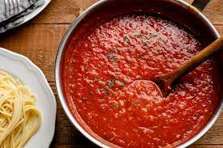

Spaghetti Sauce

Description:
Mama mia what a sauce!
If you need to season your spaghetti or yuo're the designated captain on 9gag... this is the sauce for YOU!
Ingredients:
- 2 (16 ounce) cans diced tomatoes
- 2 (15 ounce) cans tomato sauce
- 1 tablespoon garlic powder
- 2 teaspoons white sugar
- 2 teaspoons dried parsley
- 1/2 teaspoon salt
- 1/4 teaspoon dried oregano
- 1/4 teaspoon dried basil
- 1/4 teaspoon ground black pepper
Steps:
- Combine diced tomatoes, tomato sauce, garlic powder, sugar, parsley, salt, oregano, basil, and pepper in a saucepan; bring to a boil.
- Lower heat to medium-low, cover saucepan, and simmer until flavors blend, about 30 minutes.